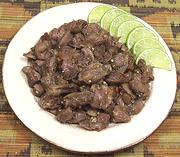

|
Chicken Gizzard AppetizerEast Africa - Tanzania - Firigisi za kuku | ||||
| Serves: Effort: Sched: DoAhead: |
5 app ** 2-1/2 hrs Yes |
Gizzards are costly gourmet items in Africa, but quite affordable in North America, as few people here know what to do with them. This salad is highly portable and served at room temperature. | |||
| This appetizer is served in upscale bars in Tanzania, and has been very well received when I've presented it at parties. | |||||
|
1-1/2 2 1/4 2 1/2 1 1 1-1/2 |
# cl in T T t T |
Chicken Gizzards Garlic Ginger root Chili, dry (1) Salt Pilau Masala (2) Lime Juice Oil |
PREP - (20 min)
|